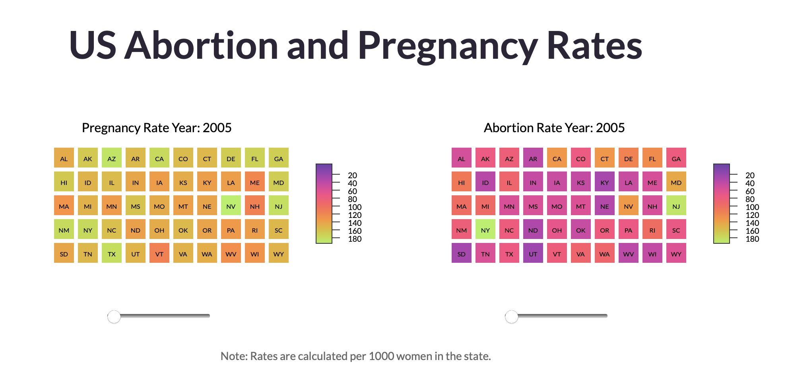

All about Joselin Barbosa
My name is Joselin Barbosa. I'm a senior at Worcester Polytechnic Institute. I'm from Dallas, Texas. Below is an animation of how I imagine myself before and after getting my diploma.
BS Computer Science 2024
Previous computer science classes I've taken include:
Through the classes I've taken at WPI I have some experience with HTML, CSS, Java, Javascript, Python and unit testing. I would not call myself an expert. I still struggle in refactoring code.
My favorite CS class by far has to be Data Visualization. Since my MQP is on analyzing data visualizations it was nice to incorporate my MQP work with the classwork. Check out my final project for the class here!
I've worked at Starbucks, Girls Who Code and Bank of America. These have been some of my roles: